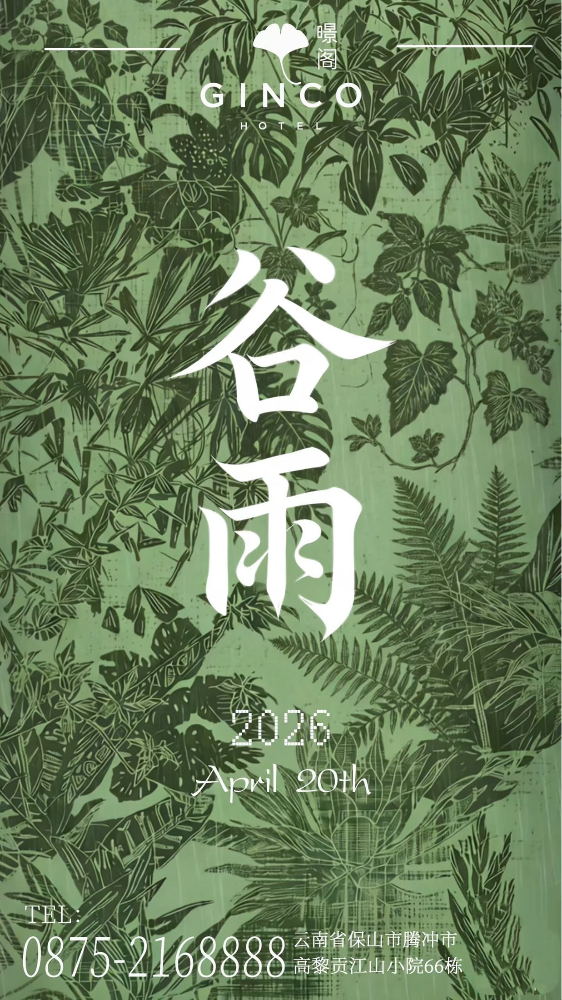
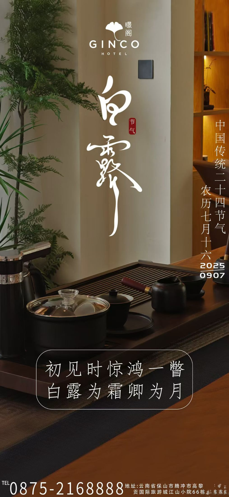
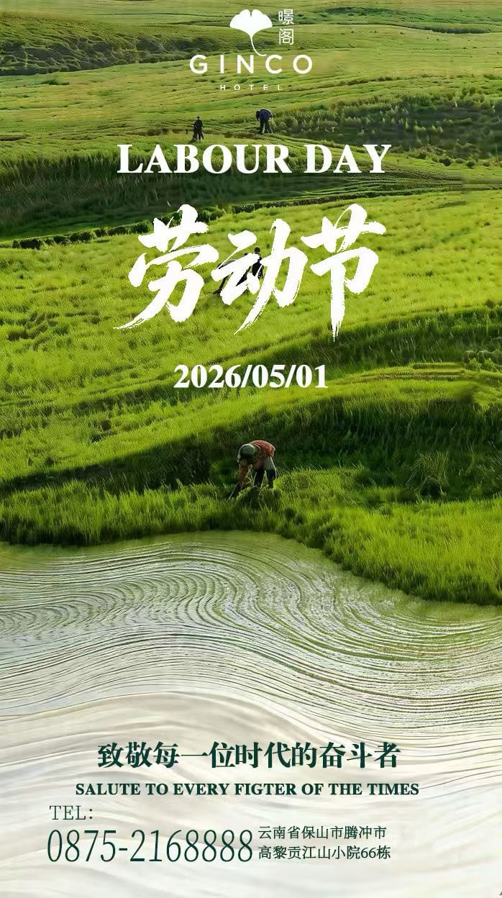
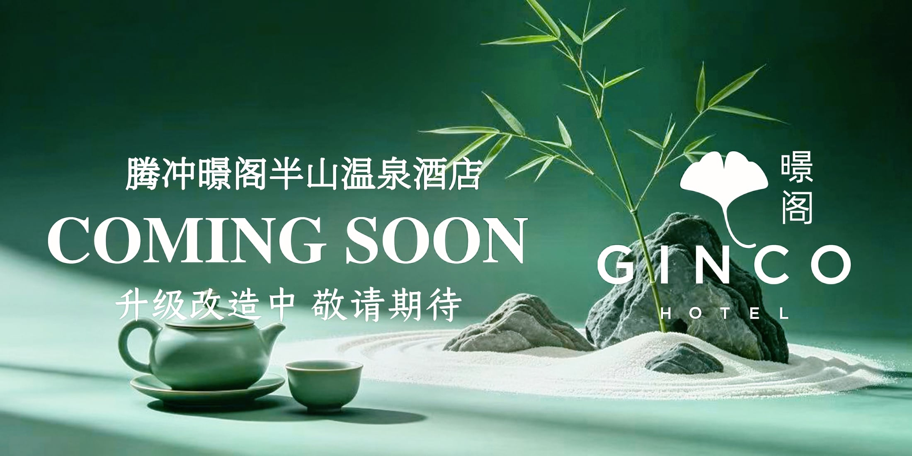
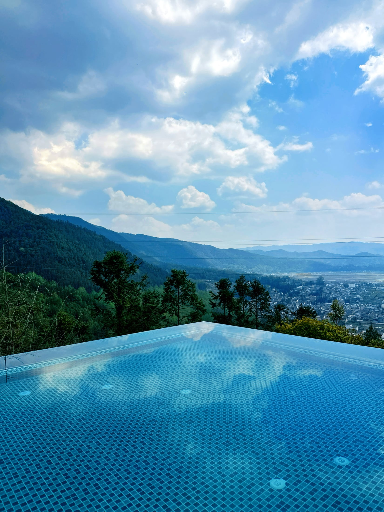
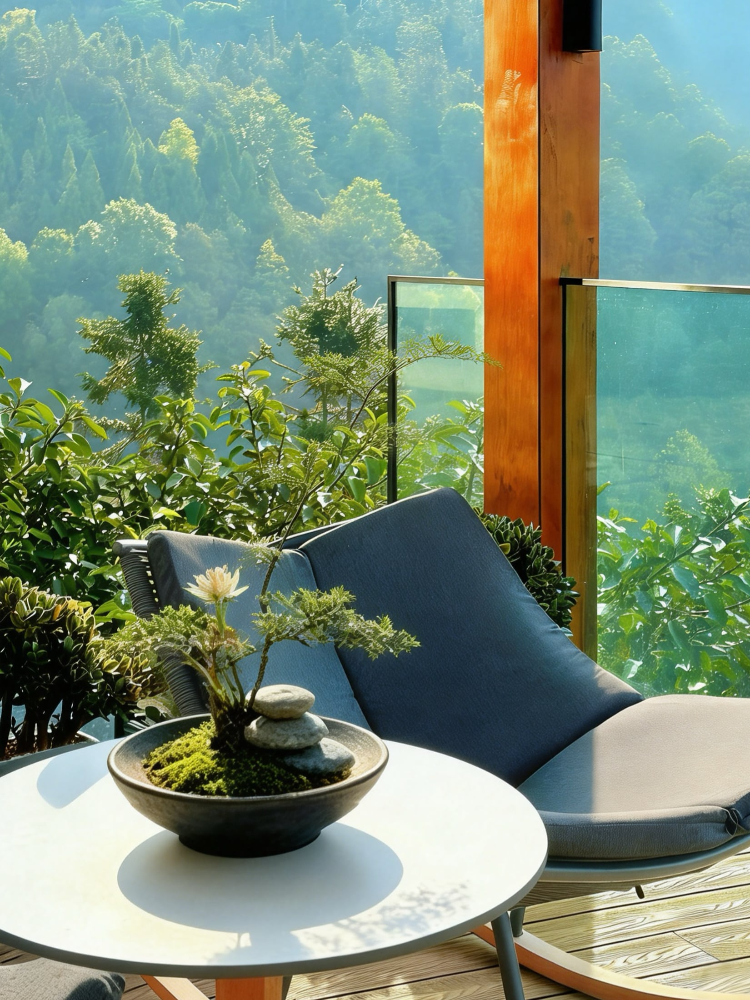
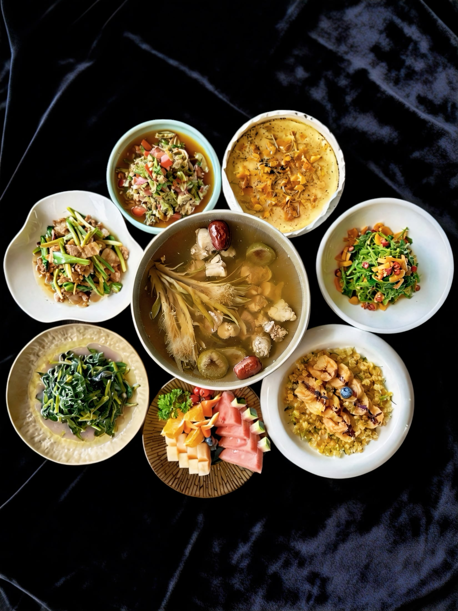
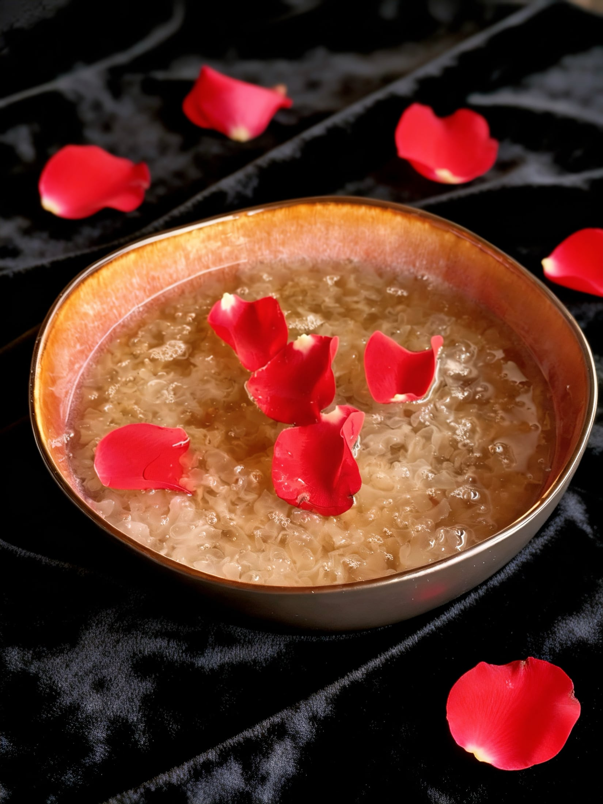

高端酒店 · 委托项目
暻阁
一家山间温泉酒店的视觉系统
一套每个季节、每次更新都能沿用的统一面貌。我们为酒店设计节气海报和各类通知，并拍摄空间与餐饮照片。
问题
各部门各做各的物料，酒店对外看起来不像同一个地方。
酒店一直有内容要发：节气问候、假期通知、活动海报、菜单和社交媒体图文。合作之前，这些物料由各部门自己做。酒店需要一套每个季节都能沿用、不用从头再来的做法，也需要自己空间和餐饮的真实照片。

思路
保留标志，定下节奏
我们保留酒店原有的标志，围绕它定下稳定的版式：充足的留白、自然意象和固定的字体层级。谷雨、白露和劳动节海报都用同一个结构。
一套版式，多种尺寸
每张海报都能改成竖版社交媒体图、横版通知（比如装修公告）和大堂屏幕版本。




拍真实的空间
我们拍了无边泳池和山景、山景休息区、大堂的银杏装置、旋转楼梯，以及蓝调时刻的泳池，让酒店在各个渠道都有自己的照片可用。




按菜品选光
每道菜分别用侧光、窗光或低光拍摄，背景选深色织物等材质，和酒店温暖的色调一致。




成果
同一家酒店，
同一种节奏，从纸面到屏幕。
这批海报和通知都已发布并印刷使用，出现在酒店的社交媒体、纸质通知和大堂屏幕上。空间照片用于酒店的社交媒体文章、活动海报和日常内容，餐饮照片用于菜单、海报和社交媒体。
概念、设计、插画、摄影与延展由北窗光完成；品牌定位与内容审核由酒店负责。
查看全部作品 ↗